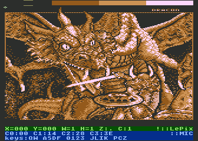
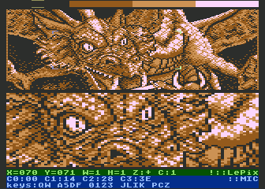
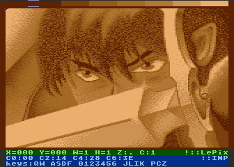
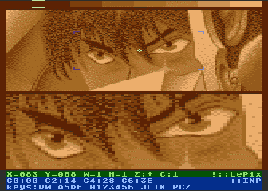
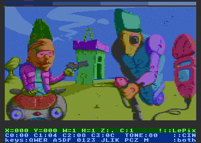
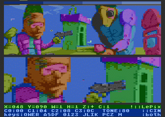
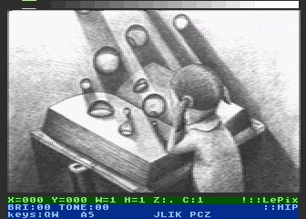
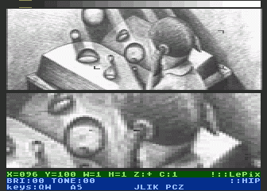
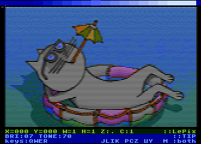
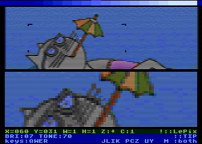

(c) 2004-2007 Marcin 'Eru' ¯ukowski
2007.05.12 - Lepix 0.2.0 released!
After a looong silence, a new version is
available here!
Changelog:
Major changes: - added TIP module - added undo (U) and redo (R) options Minor changes: - fixed color picking in HIP - fixed 'ghost cursor' and zoomed-cursor problems - fixed the first line display in HIP and CIN - experimental mouse support (both Amiga and AtariST), doesn't really work - added new cursor shapes - README Atari-readable in .atr
2005.05.23 - Lepicon is born!
I developed a small tool to experiment with new graphic modes.
It allows automatic generation of .xex files from .bmp files.
You can download it from the lepix sourceforge page
2005.01.03 - MADS has its own website
MADS assembler is now available at
http://g2f.atari8.info/mads (polish only).
Note, that due to lack of time Lepix wasn't tested with the most recent version.
2004.12.18 - Lepix 0.1.0 released!
First Sourceforge release of Lepix is here!
You can download it from the project's
files section
Changelog:
- added HIP module - project hosted on sourceforge.net - multiple changes to increase speed and stability - name changed from LEPIX to LePix :) - zoom mode: displays markers around the zoomed area - wider 'chosen-color' marker - added various cursor shapes, changed with 'C' - displays version number in menu - uses memory under ROM -> larger ZOOM :) - reset doesn't destroy image content - some minor changes and fixes
2004.12.12 - Lepix becomes open-source
Today Lepix has been released under GPL license and became Sourceforge project.
More details in the Sourceforge section
Q: What do I need to compile Lepix?
A: Lepix is written using MADS assembler by Tomasz 'TeBe' Biela.
MADS is available here.
Q: What graphic modes does Lepix currently support?
A:
MIC (Graphics 15, 160x200. 4 colors),
INP (160x200, 7 colors),
CIN (160x200, 16 tones * 4 brightnesses),
HIP (160x200, 16 brightnesses),
TIP (160x100, 16 tones * 16 brightnesses),
Q: What graphic modes are considered for the future?
A:
RIP (160x200, colors hard to describe),
GR8 (320x200, 2 colors),
IN8 (320x200, 3 colors),
HR2 (320x200, 5 colors),
and possibly some new modes :).
The hi-res (320x200) modes would require some serious changes to the Lepix infrastructure
(e.g. cursor couldn't be just sprite-based anymore).
That means, I will do it only if there is enough users demand.
Q: Will there be mouse support?
A: The experimental support is here.
However, it is far from perfect.
Problem is, the Amiga and Atari ST mouses have very (very!) small
resolution, resulting in a need for frequent checks.
It is hard to do with some graphic modes, as they leave very little CPU time.
If you know a nice way to read mouse e.g. once every frame, please let me know.
Q: Can I modify Lepix sources
A: Lepix is released under GPL.
That means you can modify the sources but the project has to stay GPL.
More details in LICENSE file in the CVS repository and releases.
Q: How can I help Lepix project
A: You may submit patches for the sources, send me more example pictures,
and simply use it. If you want to become official Lepix developer, contact me.
Lepix is hosted at the Sourceforge
(www.sourceforge.net).
The link to main project's website is http://sourceforge.net/projects/lepix
On that website you can download both sources and binary releases, access CVS, submit bugs, patches and feature requests and so on.
MIC pictures | |
|

"Fight" by Dracon/Taquart |

"Fight" in zoom mode |
INP pictures | |
|

"Lodos" by Replay/BitBusters |

"Lodos" in zoom mode |
CIN pictures | |
|

"Dedykacja" by Anj/Tristesse |

"Dedykacja" in zoom mode |
HIP pictures | |
|

"Imagine" by BeWu/Grayscale |

"Imagine" in zoom mode |
TIP pictures | |
|

"Resting" |

"Resting" in zoom mode |